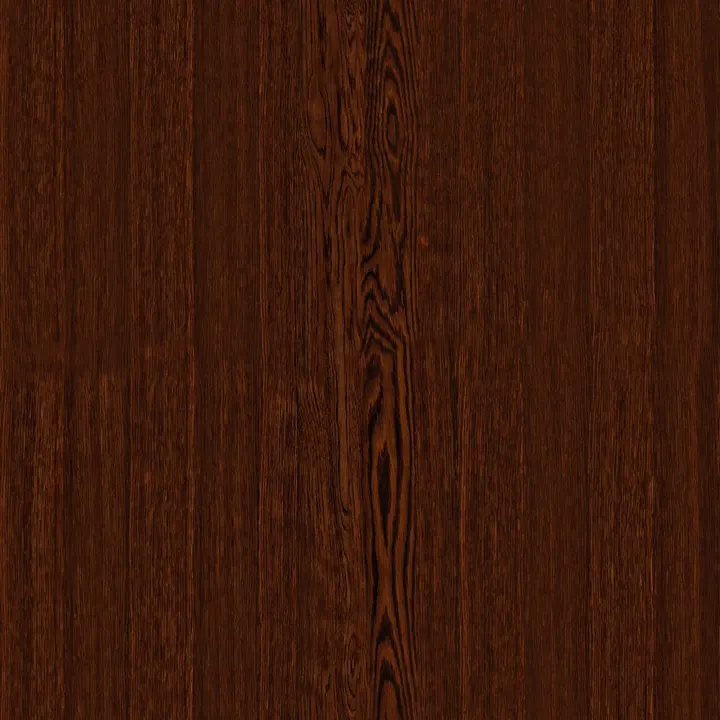

DESIGN NOTES ·
How to read a test fit before signing a lease
Look beyond the desk count. Trace three journeys through the proposed workplace.
Read articleBAMBU / FIELD NOTES
Business updates and practical notes on designing, costing and building workplaces.
Subscribe via RSS
FEATURED / BUSINESS NEWS ·
A London interiors business built around a direct relationship between the client, designer and delivery team.
Read the storyLATEST THINKING / 01
Questions worth asking before a lease, a layout or a material specification becomes a commitment.
Look beyond the desk count. Trace three journeys through the proposed workplace.
Read article
A finish earns its place through installation, cleaning and repair as well as appearance.
Read articleTHE NOTES BEHIND THE WORK
Design, cost and construction are connected. The journal explores the questions that make projects easier to evaluate and better to deliver.